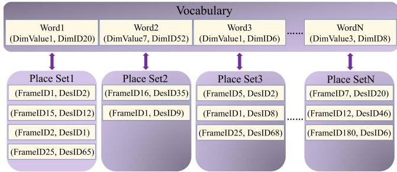
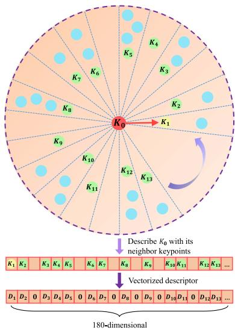

阶段 D · 激光主干 / Lesson 0092
激光回环（上）：几何路线与词袋路线
车绕了一大圈回到原点，激光怎么知道自己「来过这儿」？有两条完全不同的路可走 🧭
🎯 主题：分支定界 · 3D 词袋 · 线性关键点 · 回环指标
👥 作者：Hess 等（Google）；Cui、Chen、Zhang 等
📅 2016 / 2023 / 2024 · Real-Time Loop Closure in 2D LIDAR SLAM；BoW3D；LinK3D
本节目标
读完你应该能：说清回环为什么必须拆成「找候选」与「对齐确认」两步；讲出分支定界凭什么能在巨大的搜索窗口里实时找到最优位姿；解释 3D 词袋和视觉词袋到底差在哪；并且知道回环的评价指标在激光侧和视觉侧有什么不一样。
和前面课程怎么接
接第一季 0014 课（回环检测的指标与假阳性铁律）与 0013 课（评测协议的坑）；接第三季 0043 课（ORB-SLAM 的 DBoW2 —— 本篇要拿它对照）；接第二季 0020 –0023 课（位姿图与图优化）。第四季内部接 0074 课（LOAM 把回环明确列为未来工作）。
1. 回环要解决的两件事
先说清楚问题。回环（loop closure） 要回答的是：我此刻站的这个地方，以前是不是来过？如果来过，当时的位姿和我现在算出来的位姿，差了多少？
把它想成一件很日常的事：你在一个巨大的地下停车场里绕，手里有一张自己边走边画的地图。走到某个角落，你觉得「这堵墙好像见过」。但要确认这件事，你得做两步：
第一步：快速找出候选
停车场里停着上千辆车、有几百个柱子。你不可能把当前看到的画面，和记忆里每一帧 都仔细比一遍——那是几万次精细比对，算不过来。所以你必须先粗筛 出「有那么几帧值得细看」。
第二步：把候选对齐并确认
粗筛出来的候选未必是真的。你得把它和当前帧精细对齐 （算出一个确切的相对位姿），再判断这个对齐结果是不是站得住脚 。这一步就是第一季 0014 课讲的「假阳性铁律」——一次错误的回环，足以把整张地图拧坏。
本节要讲的三个系统，正是围绕这两步展开的。而它们走了两条完全不同的路线 ：
本节的骨架：两条路线
路线甲 · 几何路线（Cartographer，2016）： 我不做「描述子」，我直接把当前帧拿去和子图做几何扫描匹配 ，靠分支定界（branch and bound） 把搜索空间剪到可以实时算完。它的聪明之处不在「算得快」，而在知道哪些地方不用算 。
路线乙 · 外观路线（BoW3D，2023）： 我把视觉里的词袋（Bag of Words） 思想搬到三维点云上——把一帧点云「拆成词」，查索引找候选，再算 6 自由度位姿。而它的「词」从哪来？来自它使用的描述子 LinK3D（2024） 。
所以这三篇是一条链：LinK3D 提供「词」，BoW3D 用「词」搭检索，Cartographer 则压根不走这条路。
还有一个前提要交代清楚，否则后面会一直别扭：为什么「对齐确认」这么难？
因为激光 SLAM 跑了一段时间以后，位姿是有累积漂移 的。你回到一个来过的地方时，你以为自己在 $(x_1,y_1)$，实际上可能在离它几米外。所以「对齐」不是在一个小范围里微调，而是要在一个相当大的搜索窗口 里找最优解。Cartographer 原文用的窗口是：水平方向各 $W_x=W_y=7$ 米，角度方向 $W_\theta = 30^\circ$。在一个 14 米 × 14 米 × 30 度的空间里暴力搜索，就是这一节要讲的第一个技术核心。
互动判断
假设你在一个 5 公里长的园区里跑 SLAM，总共攒下了 5000 帧点云。现在不做任何筛选，直接拿当前帧和历史上每一帧做一次精细配准（每帧耗时按 5 毫秒算），这一轮要多久？
大约 5 毫秒左右
大约 25 秒钟左右
几乎瞬间就能完成
2. Cartographer：两层架构与子图
★ 先纠一个名字（本节必须交代清楚）
课程路线图给这一篇的显示名是「2D 激光实时回环（2016） 」。这个名字没有点出它的真实身份 ——它的正文标题是 Real-Time Loop Closure in 2D LIDAR SLAM ，作者是 Hess、Kohler、Rapp、Andor，四位全部来自 Google 。论文正文在介绍相关工作时的原话是：Google's Cartographer provides a real-time solution for indoor mapping in the form of a sensor equipped backpack that generates 2D grid maps with a r = 5 cm resolution. （Google 的 Cartographer 以背负式传感器的方式，提供了一套生成 5 厘米分辨率 2D 栅格地图的室内实时建图方案。）
判定依据： ① 正文明确把 Cartographer 作为本系统指称；② 参考文献与致谢指向同一个 Google 团队；③ 摘要里说的 backpack mapping platform + branch-and-bound，与开源项目 Cartographer 的实现一致。
结论：这一篇就是 Cartographer 的回环论文，不是一篇泛泛的「2D 回环综述」。 把它当成综述读会完全读错——它讲的是一个具体系统的具体机制。
Cartographer 的架构只有两层，原文讲得非常干脆：
局部 SLAM （local SLAM）：把每一帧扫描配到一小块刚建好的世界上 → 得到子图（submap） 与局部位姿全局 SLAM （global SLAM）：在后台把「扫描 ↔ 子图」这个图优化一遍 → 消掉累积误差
先说下面这个零件：子图（submap） 。
原文的原话是：A few consecutive scans are used to build a submap. （若干帧连续的扫描被用来构建一个子图。）子图的形式是概率栅格 ：
这句话的读法是：把世界切成边长为 $r$ 的小方格，每个格子放一个数，这个数表示「这个格子被占据的概率」。 原文取 $r = 5$ 厘米。你打到一个点，那个格子就往「占据」那一侧挪一点；激光从雷达到这个点之间穿过的那些格子，就往「空闲」那一侧挪一点。
为什么要有子图这个概念？因为「拿当前帧直接配整张全球地图」在大场景里既慢又不稳（地图一直在长大）。而「拿当前帧配一小块刚建好的局部地图」又快又准——代价是，误差会慢慢累积 。
原文说得很直白：As scans are only matched against a submap containing a few recent scans, the approach described above slowly accumulates error. （由于扫描只与包含最近若干帧的子图匹配，上述做法会缓慢累积误差。）
于是就有了全局 SLAM。它的关键设计有两条，都值得记住：
① 子图「完工」之后才参与回环
原文：When a submap is finished, that is no new scans will be inserted into it anymore, it takes part in scan matching for loop closure. （当一个子图完工——也就是不再有新的扫描插入时——它才参与回环的扫描匹配。）
这一点有个必须知道的代价：回环检测天然是有延迟的 。你刚走过的地方所在的那个子图还没完工，就没法用它做回环。
② 优化用的是 Sparse Pose Adjustment
原文说这套「把所有扫描位姿与子图位姿一起优化」的做法follows Sparse Pose Adjustment （SPA，即第二季 0020 课讲过的位姿图那一族）。
具体求解器是 Ceres ；对离群约束，原文明确用了 Huber 损失 ——这正是第二季 0019 课「鲁棒核」在激光侧的又一次露面。
还有一个必须点明的性质：Cartographer 的这一篇是一个纯 2D 系统。 位姿只有三个自由度 $(x, y, \theta)$。这个平面假设带来了非常实在的简化，你会在下一节看到它的好处：
搜索窗口只有三个维度 ，不是六个。原文直接把窗口取成 $W_x = W_y = 7$ 米、$W_\theta = 30^\circ$。栅格是 2D 的 ，所以「预计算最大值」这件事可以在二维数组上做（下一节的核心）。旋转步长有一个干净的闭式解 ：取「离雷达最远的点转一步，位移不超过一个像素宽 $r$」作为准则，用余弦定理推出来就是下一节那个公式。
原文在结论里也老老实实承认了这套设计的天花板：系统是 2D 的、依赖概率栅格、大场景内存开销高（Deutsches 博物馆那次实测用掉了 2.2 GB）。
3. ★ 分支定界：知道哪些不用算
这一节是本篇的技术核心，也是整个模块最值得反复看的一段。
先把问题摆出来。回环匹配要解的是：
逐项读：$h_k$ 是这一帧扫描里的第 $k$ 个点；$T_\xi$ 是「按位姿 $\xi$ 把这个点搬到子图坐标系」的变换；$M_{\mathrm{nearest}}$ 是子图的概率值（查询时取最近的栅格）；把这些概率值加起来，就是这个位姿的得分 。我们想找的是得分最高的那个位姿 ，而且是在整个搜索窗口 $\mathcal{W}$ 里找。
暴力做法（原文 Algorithm 1）是把窗口里每一个位姿都算一遍。原文对它的评价是：for the search window sizes we have in mind it would be far too slow （对我们设想的搜索窗口规模来说，这远远太慢了）。
于是它换了一个思路。这个思路本身一点都不新——它在混合整数线性规划里早就被用过——但被搬到激光回环上之后，效果极好。
分支定界的一句话版本
把「所有可能的位姿」组织成一棵树：根节点代表整个搜索窗口，每个节点的孩子把父节点的范围切成几块（合起来还是原来那一堆可能），叶子节点就是一个具体的位姿。
然后你只要做一件事：对每个节点，算一个「这个节点里所有位姿的得分上界」。 如果这个上界已经低于你已经找到的最优解，那这个节点整个子树里不可能 存在更好的解——整片剪掉，一眼都不用看。
这就是「知道哪些不用算」。注意原文特意强调的一点：
「注意，这个算法是精确的 。只要内节点 $c$ 的 $\text{score}(c)$ 确实是它所有元素得分的上界，它就给出与朴素做法完全相同的结果。」
这句话非常关键：分支定界不是近似加速，它是无损的。 它不牺牲最优性，只是把「明显不可能更好」的分支提前砍掉。
分支定界：把房间切成子图，再用一圈圈收窄的搜索窗找最匹配的位姿
一个真实的房间（俯视）
门
子图 1
子图 2
子图 3
子图 4
子图 5
子图 6
有墙、有门、有桌椅；虚线把房间切成一块块子图
同一张地图：一层层收窄的搜索窗
最粗一层
细一层
最细一层
一个位姿
上界不够好的整片剪掉，只在剩下的范围里细找
它的聪明之处不是算得快，而是知道哪些不用算
这张图在画什么： 左边是一个真实房间的俯视图——有墙、有门、有桌椅；虚线把房间切成一块块「子图」。右边是同一张地图，上面叠了一层比一层小的搜索框：先用最大的框粗粗试一遍，再在留下的范围里用中等框试，最后只剩一个小格子。怎么看这张图： ① 先看左格那几条橙红色虚线 ——它们不是房间的一部分，而是 Cartographer 把世界切成 5 厘米概率栅格、再由若干帧合成子图的示意；② 再看右格最外面那圈蓝色大虚线框 ——它代表「所有可能的位姿」，也就是分支定界树的根；③ 往内看橙框、绿框、红点——每进一层，范围就被切成四份、只留下最有希望的那一份；④ 那些从框里引出来的细线，对应的是「这一层的上界是多少」。要记住的一句话： 分支定界不改变答案，它只改变「要走多少步」——真正省下来的时间，全部来自那些被证明「不可能更好」的分支。
那么问题来了：「一个节点里所有位姿的得分上界」，凭什么能很快算出来？ 如果算上界本身就很贵，那这套方法就白搭了。原文的答案很漂亮。
先把节点说清楚。树上的每个节点是一个四元组：
它的含义是：高度为 $c_h$ 的节点，覆盖 $2^{c_h}\times 2^{c_h}$ 种可能的平移位置，但只对应一个确定的旋转角。 叶节点的高度是 $c_h=0$，就是一个具体的位姿：
接下来是核心。原文对内节点的得分取了一个「先取最大再求和」的形式：
请盯着这个不等式看。左边是「每个点各自挑一个最好的位置 ，再把所有点的分数加起来」；右边是「先固定一个位姿，再把所有点在这个位姿下的分数加起来 ，然后从所有位姿里挑最好的」。
左边一定不小于 右边。道理很朴素：「让每个点各挑各的最优」显然是比「让所有点共用一个位姿」更宽松的条件 ，所以它给出来的分数只会更高。而右边恰恰是我们真正想要的东西（所有位姿中得分最高的那一个）。所以左边的值就是合法上界 。
更关键的是：左边这个量可以很快算出来。 因为它把「$\max$」提到了求和号里面 ——每个点只需要在它自己的位置上查一次「这一片区域里的最大值」，不用去试每一个位姿。原文为此预计算了一组栅格：
翻译一下：$M^{h}_{\mathrm{precomp}}$ 和原来的栅格像素结构完全一样 ，只是每个像素里装的不是「这一格的占用概率」，而是「从这个格子开始的 $2^h\times 2^h$ 方块里的最大值 」。有了它，内节点的得分就变成一次简单的求和：
原文特别指出：这个式子的计算量只和扫描点数成线性关系 。也就是说，无论节点覆盖多大的平移范围，算上界的代价都一样。这就是整套方法能跑起来的原因。
剩下两个工程细节，也很值得知道：
预计算栅格怎么来、什么时候算
原文说，要等到一个概率栅格不再被更新（也就是子图完工）时才去算它的预计算栅格 ——这跟上一节讲的「完工的子图才参与回环」是同一件事。
实现上是逐层递推：先算「从每个像素开始的 $2^h$ 宽一行」的最大值，用这个中间结果构造下一层。整体复杂度是 $O(n)$，$n$ 是像素数。原文还提到一个漂亮的技巧：如果数值是按加入顺序被移除的，那么「变化集合的最大值」可以在均摊 $O(1)$ 内维护。
旋转方向的步长怎么定
搜平移时步长就是栅格宽度 $r$。但搜角度时，角度步长太大就会漏掉最优解 。原文的准则很好懂：让离雷达最远的那个点（距离 $d_{\max}$）转一步之后，位移不超过一个像素宽 $r$。
用余弦定理一推，就得到那个干净的闭式解（原文式 7）。这正是第 2 节说的「2D 假设带来的简化」之一——在 3D 里就没有这么干净的形式了。
最后是搜索策略本身。原文用的是 深度优先（DFS） ，理由是：「算法效率取决于树被剪掉多少，而这取决于两件事——一个好的上界 ，和一个足够好的当前最优解 。」DFS 能很快摸到很多叶节点，正好帮忙把「当前最优解」抬上去。另外，访问子节点时是按上界从大到小 排的，先走最有希望的那一支。原文还设了一个得分阈值 ：低于这个分数的解，它根本不关心——因为差的匹配本来就不该被当成回环约束加进去。
原图注（Fig. 3）： Precomputed grids of size 1, 4, 16 and 64.怎么看这张图： ① 这是把刚才那个「从每个格子开始的 $2^h\times 2^h$ 方块取最大值」画了出来；② 四张图从左上到右下对应 $h$ 越来越大——格子的「粒度」越来越粗：尺寸 1 就是原栅格，尺寸 4 是每 $2\times2$ 取最大，尺寸 16 是 $4\times4$，尺寸 64 是 $8\times8$；③ 请盯着看越粗的那张图里高值区域铺得越开 ——因为取最大值会把局部的高点「撑大」成一个方块；④ 想知道某个节点（覆盖某个平移范围）的得分上界时，只要在这个点数上查对应粗糙度 的那一张，就能一次拿到「这片范围里最好能有多好」。要记住的一句话： 这几张图就是分支定界的「作弊小抄」——把「搜索」预先熬成了「查表」。
4. BoW3D：把词袋搬到三维点云
现在换到另一条路线。先把视觉侧的老朋友请出来。
第三季 0043 课里，ORB-SLAM 用的检索机制是 DBoW2 ：把图像里提取出来的 ORB 特征，通过一棵离线训练好的词汇树 ，映射成一堆「视觉词（word）」；一张图就变成「用了哪些词、各用了多少次」的一个向量；两张图比一比向量，就知道像不像。这个机制非常好用，因为它把「图像 vs 图像」的比较，换成了「词袋 vs 词袋」的比较。
那么问题来了：为什么激光 SLAM 里不是早就该有这个东西了？
BoW3D 的引言正面回答了这个疑问，理由可以归成三层：视觉侧有成熟好用的 2D 特征（SIFT、SURF、BRIEF、ORB）；相机本来就是在做 2D 特征，检索需求天然匹配；而词袋把图像信息压缩成了紧凑的向量，还建了树来加速——三件事凑齐了，才有 DBoW2 的成功。
但到了 3D 激光这边，原文的原话是：点云的不规则、稀疏、无序 给 3D 特征提取与表示带来了挑战，而「为 3D 特征建词袋、把它用到实时回环、并且校正完整 6 自由度位姿」这几件事，仍然是未解决的 。
BoW3D 做的就是把它们解决掉。它的做法可以拆成三个问题：
问题一：3D 关键点怎么定义？
它直接用 LinK3D 的关键点（下一节细讲）。这里先记住一件事：LinK3D 的关键点是「带邻域结构 」的，不是孤零零一个点。
问题二：词怎么来？词典要不要离线训练？
这是本篇最巧的一步。它不需要额外的词典文件。 原因是 LinK3D 的描述子本身就是 180 维、每一维固定对应一个扇区 ——也就是说，「维」天生就是有含义的。
于是 BoW3D 把一个「词」定义成两件事的组合：非零的那一维的值（Dim-value） 加那一维的编号（Dim-ID） 。这样就不需要再去聚类、训练一棵词汇树了。
问题三：怎么快速检索？
用哈希表 ：词 → 出现过这个词的地点集合（place set）。哈希表理论上 $O(1)$，这正是它敢做实时检索的底气。
3D 词袋：先把一帧点云拆成词，再查卡槽、取交集
卡槽 · 词 A
帧 17
帧 42
卡槽 · 词 B
帧 17
帧 63
卡槽 · 词 C
帧 17
帧 42
新的一帧
把它拆出的几个局部结构，分别投进对应的卡槽
取交集
候选帧：17
只有它同时出现在
三个卡槽里
帧 42 只命中两个，
帧 63 只命中一个
先查卡槽，再取交集 —— 检索不必遍历每一帧
这张图在画什么： 把 BoW3D 的数据库想象成一座图书馆的索引卡柜。上面那排是三个「卡槽」，每个卡槽代表一个视觉词 （也就是 LinK3D 描述子里某一维的那个非零值），卡槽里插着的白卡片写着哪些历史帧用过这个词 。下面那一片绿点是我们刚收到的新一帧点云，它被拆成几个局部结构，各自投进对应的卡槽。怎么看这张图： ① 先看三个卡槽里卡片内容的差别 ——帧 17 在三个卡槽里都出现了，帧 42 只在 A 和 C，帧 63 只在 B；② 再看底下那条绿色箭头——每个局部结构「投递」的方向是由它自己的维编号决定的 ，不是随便投；③ 最后看右边的结果：取交集 之后只剩帧 17。要记住的一句话： 这就是为什么检索不用遍历全部——先查卡槽，再取交集。 哈希表让「查卡槽」这一步几乎是常数时间，交集运算又天然把候选压得极小。
检索出来候选之后，还要做两件事：打分 和校正 。
打分 用的是「出现次数 + 一个类似 tf-idf 的过滤」。原文的逻辑是：如果一个词在到处都出现 （比如每一帧里都有），那它就没有区分度，还会拖慢检索。所以它定义了一个比值：
其中 $N_{set}$ 是当前这个地点集合的大小，$N$ 是到目前为止见过的地点总数，$n_w$ 是词表里的词数——所以 $\frac{N}{n_w}$ 就是「平均每个地点集合有多大」。如果某个词的集合明显大于平均（$ratio$ 超过阈值 $Th_r = 4$），它就不参与计数了。 至于候选，要它被命中的次数超过 $Th_f = 5$ 才被认可。
这两个阈值不是拍脑袋定的。原文专门做了参数实验（它的 Fig. 6 就是把 $F_1$ 分数和运行时间随这两个阈值变化画出来）：$Th_r$ 增大时运行时间上升，$F_1$ 也上升，但超过 3 之后 $F_1$ 变化不大、时间还在涨；$Th_f$ 小于 5 时虽然 $F_1$ 更高，但要多花很多时间；大于 8 又会因为 $F_1$ 太低而降低鲁棒性。折中下来取了 $Th_r=4$、$Th_f=5$。
校正 则是这条路线真正的杀手锏。LinK3D 能给出点对点 的匹配，所以 BoW3D 可以拿匹配点集，先用 RANSAC 把外点剔掉，再用 SVD 解出最优的刚体变换 $\mathbf{R}, \mathbf{t}$——也就是完整的 6 自由度 回环位姿。这一点在它的对比表里非常突出：Scan Context 这一类方法只能给 1 自由度（偏航角），SSC-RN 给 3 自由度，只有 BoW3D 给 6 自由度 。
拿到回环位姿后，剩下的就是第二季 0020 课的老流程：建位姿图，节点是全局位姿，边是「相邻帧的相对位姿」+「校正后的回环位姿」，用 g2o 的 Levenberg–Marquardt 求解，然后把优化后的位姿反馈回去更新局部地图。
实时性：它最硬的卖点
原文强调的重点几乎全在速度上。在 KITTI 00（4000 多帧 64 线激光扫描）上，用一台 Intel Core i7 @2.2 GHz 的笔记本 ，BoW3D 平均 48 毫秒 完成「识别 + 校正」。原文还补充：单帧整体处理不超过 100 毫秒 ；建图和位姿图优化虽然单次超过 100 毫秒，但因为频率低，仍可在线跑。
更要紧的一句在结论里：与基于深度学习的方法相比，它不需要预训练，也不需要 GPU。 这是纯 CPU 的方法。

原图注（Fig. 3）： The data structure of BoW3D. The hash table is used for the retrieval. The word of BoW3D consists of the non-zero value (Dim-value) in the descriptor and the corresponding dimension (Dim-ID). Each word corresponds to a place set, in which the word has appeared. The place also consists of two parts, one is frame ID, the other is the descriptor ID in the frame.怎么看这张图： ① 看它把「一个词」拆成了哪两部分——非零值 + 维度编号 。这一对组合起来才是一个词，只给值不给维度是不行的；② 看「地点」被拆成了哪两部分——帧 ID + 帧内描述子编号 ，后者意味着它连「是这一帧里的哪个关键点」都记住了，这才有可能回过去做点对点匹配、进而算出 6 自由度位姿；③ 图里的箭头方向就是检索的走向：从词出发，一路走到具体帧。要记住的一句话： 这张图里的结构之所以成立，前提是「维」本身有意义 ——如果描述子的每一维说不清代表什么，就没法用它当词的编号。
互动判断
BoW3D 声称「不需要额外加载词典文件」，而 ORB-SLAM 的 DBoW2 必须先加载一棵离线训练好的词汇树。造成这个差别的最根本原因是什么？
因为激光点云数据量更小
因为它的维有对应的含义
因为它完全不依赖 GPU 计算
5. LinK3D：BoW3D 的描述子底座
上一节一直说「BoW3D 的词来自 LinK3D」。这一节把那个「词」拆开来看。
按课程合成时的判断，LinK3D 更适合作为 BoW3D 的铺垫放在本节，不必单开一节 ——因为它的定位是描述子基础设施，而不是一个完整的回环系统。但它本身值得认真讲，理由有两个：它解释了「3D 词袋」为什么可行；而且在它的实验里有一批非常干净的性能对比数字。
① 「线性关键点」到底是什么
先说常见的做法。3D 里传统的局部描述子（PFH、FPFH、SHOT、3DSC 这些）基本都在做同一件事：围绕一个点，统计它周围邻域的各种几何量，装进一个直方图。
LinK3D 认为这类做法在激光点云上会失灵，原因写得很具体：激光点云里有大量不连续而且彼此相似的局部表面 （相似的平面、树、杆子），直方图统计很容易混；而且点云很稀疏、分布不均，在固定大小的空间里往往凑不够点 ，统计量就出不来。
它的替代方案是：不要用一个孤立的点来描述一个地方，用「这个点 + 它的一圈邻居」来描述。 原文的说法是 represents the keypoint with its robust neighbor keypoints, which provide strong constraints in the description of the keypoint （用稳健的邻域关键点来表示这个关键点，邻点为描述提供了强约束）。
整体流程分三步走，原文把它画成一张工作流图（它的 Fig. 2）：
① 提出边缘点 （按局部平滑度过阈值筛）扇区聚合 ：在 XoY 平面上按角度把点分进不同扇区，然后只在每个扇区内部 做聚类，得到稳健的聚合关键点生成描述子 ：以关键点为中心切 180 个扇区，每维填「该扇区内最近关键点的距离」
第 ② 步里那个「只在扇区内部聚类」的细节值得多说一句。原文特意强调：the clustering operation is only performed within each sector area, rather than directly within the whole space （聚类只在每个扇区内部进行，而不是直接在整个空间里做）。这是一个很接地气的工程妥协——整个空间聚类的代价和不确定性都更高。
至于「线性」这个词：一个关键点是用它和最近邻连成的那条向量的方向来定向的 ——从 $k_0$ 指向离它最近的关键点 $k_1$，这条向量就是它的主方向 。为了让描述子在视点变化下更稳，它还会算 Des1、Des2、Des3 三份（对应最近、次近、第三近的关键点），然后按优先级取每一维上第一个非零的值 ：Des1 优先级最高，因为它最近、最可靠。原文解释得很清楚：the algorithm is sensitive to the closest keypoint. In the presence of interference from an outlier keypoint, the matching will fail. （算法对最近的那个关键点很敏感。一旦被一个离群关键点干扰，匹配就会失败。）所以它不押注在一个点上。
② 「免训练」指什么
很直白：它不需要训练，因为它是手工设计的特征 ——原文把做法归在 hand-crafted 一类，并在讨论中拿它和 DNN 方法对照（后者通常需要 GPU 加速，泛化性也还有待改进）。它的参照物是视觉里的 SIFT 和 ORB：一套由人设计、有明确几何含义、拿来即用的规则。
这带来两个直接好处：没有训练集依赖，也没有 GPU 依赖。 这也正是它能被 BoW3D 拿去做实时系统底座的原因。
③ 轻量性：一组很能说明问题的数字
LinK3D 的描述子是 180 维 ——因为 XoY 平面被切成 180 个扇区。用 64 线激光（i7 处理器，纯 CPU）：
原文的对比表里，同表的手工特征方法耗时是：SHOT 2.696 秒、3DSC 7.129 秒 （表中还列了 PFH 11.225 秒、FPFH 5.616 秒）。也就是说，在同一个任务上，LinK3D 比别人快一到两个数量级，而且它的那一行 GPU 一栏写着不需要，深度学习方法那一栏全都写着需要 。
原文自己对这个速度的评价是：faster than the sensor frame rate at 10 Hz of a typical rotating LiDAR sensor （比典型旋转激光雷达 10 Hz 的传感器帧率还快）。
匹配质量方面，它在 KITTI 的三个「非结构化场景」序列上的成功率是：KITTI 01 为 88.6%、KITTI 02 为 97.6%、KITTI 09 为 99.9% 。另外它还做了一次「接到里程计上」的实验：把 A-LOAM 的 scan-to-scan 配准换成由 LinK3D 匹配结果经 SVD 求解的配准，精度与原方法可比 。
④ 局限（原文承认的）
非结构化场景会掉
原文的原话是：在有效边缘特征很少的非结构化 KITTI 01、02、09 上，RANSAC 之后可能产生不出真正的匹配 。KITTI 01 是高速公路场景，02 与 09 的部分扫描来自森林。原文把「提升非结构化场景的鲁棒性」写进了未来工作。
旋转不变性是「部分」的
它的不变性靠的是主方向 （$k_0$ 到最近邻的那条向量），而不是像 RING++ 那样从数学上保证的完整旋转不变。一旦主方向的选取被干扰，描述子就会偏。
另外原文把它归为纯几何描述子：对动态物体与遮挡敏感 ——同一块局部表面在前后两帧里可能被照成了两个样子。

原图注（Fig. 5）： Illustration of the descriptor generation. The XoY plane, centered on the current keypoint $k_o$ is divided into 180 sector areas. We first search for the closest keypoint k1 of k0 , then the main direction is the vector from $k_0$ to $k_1$. Then the closest keypoint in each sector area is searched for. The searched keypoints k1 , k2 , k3 , etc., are used for describing the current $k_0$. Through the vectorizing operation, by using the distance values between $k_o$ and k1 , k2 , k3 , etc., the 180-dimensional LinK3D descriptor will be obtained.怎么看这张图： ① 先找中心的那个关键点 $k_0$——它是被描述的对象；② 看从它伸出去的那条带箭头的线 ——那就是主方向 （指向最近的关键点 $k_1$），整个扇区编号都以它为起点逆时针排；③ 再看那一圈像切披萨一样被分成的扇区，每个扇区里只留它自己最近的那一个关键点；④ 最后把「每个扇区里那个最近点到 $k_0$ 的距离」按扇区顺序排成一个 180 长的序列，里面很多位置是 0（那一片扇区没有点）——这个序列就是描述子。 要记住的一句话： 它和直方图类描述子的根本区别在于——直方图丢掉了「哪个方向」，而它保留了方向。 正因为保留了方向，「哪一维非零」才能直接当词用。
6. 回环的评价指标：回到第一季 0014
技术讲完了，来谈一个更「上头」的问题：怎么判断一个回环系统是好是坏？
第一季 0014 课讲过两条：precision / recall ，以及那条被反复提起的假阳性铁律 ——在回环这件事上，一次假阳性的破坏力远大于一次漏检。漏掉一个回环，你只是少了一条约束，地图略糙；把两处根本不同的地方认定成同一个地方，你会往优化里塞一条错误的硬约束 ，它会把两块本来对得上的地图硬生生拧到一起 。地图从此扭曲，而且往往很难从结果上看出是哪一条约束出的问题。
那么激光侧的实践里，这个铁律是怎么落地的？两个样本给了两个略有不同的答案。
Cartographer 的做法：先优化，再看谁被违反
Cartographer 的 Table IV 报的成绩是这样的（测试用例 / 约束条数 / 精度 ）：
测试场景
约束条数
精度
Aces 971 98.1% Intel 5786 97.2% MIT Killian Court 916 93.4% MIT CSAIL 1857 94.1% Freiburg bldg 79 412 99.8% Freiburg hospital 554 77.3%
注意这张表里只有精度，没有召回率 。那么「真阳性」是怎么定的？原文说得很清楚：一条回环约束，只有在把它加进 SPA 优化之后，受到的违反不超过 20 厘米或 1 度，才算真阳性。
这句话有两层含义，都很有意思：
它的「真伪」是事后判定的 ——不是靠事先的距离或时间阈值，而是看这条约束和整体最优解合不合得来 。思路有点像第一季 0013 课讲评测协议时的那些坑：判定标准会直接影响你报出来的数字。原文并不掩饰假阳性 。原话是：while our scan-to-submap matching procedure produces false positives which have to be handled in the optimization (SPA), it manages to provide a sufficient number of loop closure constraints in all test cases. （我们的 scan-to-submap 匹配确实会产生假阳性，需要在优化里处理，但在所有测试用例里它都提供了足够多的回环约束。）
而 hospital 那 77.3% 是怎么来的，原文也解释得很坦率：在那个场景里，它选了一个较低的分辨率和一个较低的最低得分阈值 ，于是假阳性率相对偏高。它还补了一句非常关键的权衡：「可以通过提高最低得分来改善精度，但这会降低某些维度上的解的质量 」；并且明确表态——作者认为真值（也就是最终地图质量）才是更好的基准。
这句话其实是在对第一季 0014 的铁律做一次「工程修正」：精度不是唯一的裁判，最终地图才是。 为了地图质量，它愿意接受一部分假阳性，靠 Huber 损失（回到第二季 0019 课的鲁棒核）去兜。
BoW3D 的做法：F1 与 EP
BoW3D 用的是另一套语言：最大 $F_1$ 分数 和扩展精度 EP 。
$P_{R0}$ 是「最小召回处的精度」，$R_{P100}$ 是「100% 精度处的最大召回 」。
第二项值得停一下：$R_{P100}$ 就是视觉侧那个我们很熟的 R@100P。 第一季 0013 课讲过它的来历与它「历史地位的变化」——它之所以流行，是因为它把「一次都不能错」这条铁律直接编码进了指标里：在保证零假阳性的前提下，你能唤回多少真回环。而 BoW3D 的 EP 正是把它和 $P_{R0}$ 平均了一下。换句话说，词袋这条路线在评价语言上，是直接继承了视觉侧的。
那么，激光侧的回环指标与视觉侧有何不同？
按这三篇材料能如实说出来的差别有三条：
① 视觉侧更依赖「纯检索」指标
视觉侧的图像数据库动辄上万张，检索本身就很难，所以 R@100P 这类「只看候选排序质量」的指标是标配。
而激光侧有些工作（比如 Cartographer）干脆不报召回 ，因为它更关心「这条约束加进去之后地图好不好」——精度只是中间量。
② 激光侧更常报「最终地图/轨迹质量」
Cartographer 报的是相对位姿误差与最终地图；BoW3D 除了检索指标，还报了校正之后的角误差、平移误差和 RMSE 的下降（KITTI 00 为 0.685°/0.764 m，KITTI 08 为 1.480°/0.037 m）。
换句话说，激光侧的回环论文往往要证明「加上我之后，整条轨迹变好了」。
③ 维度也不一样：单帧信息量 vs 候选数量
激光单帧点云的信息量远大于一张灰度图，因此「区分一个地方」相对更容易；但一旦判错，它的破坏也更直接——它会把两块高精度的局部地图强行焊在一起。
这正好解释了为什么 Cartographer 宁可用一个较低的阈值换更多约束（再靠鲁棒核兜），而 BoW3D 要用 $R_{P100}$ 这种「零假阳性」口径来自证。
我们做这一节的判断：两边其实在往中间走。 视觉侧越来越承认「检索分数高不等于最终地图好」（0013 课那些评测坑就是证据）；激光侧也开始引入 R@100P 这样的口径（BoW3D 的 EP）。唯一没变的还是那条铁律：假阳性必须被当成一等公民来对待。
7. 三篇横向对比，以及我们的判断
组课的老规矩：先用一张表把三篇的主干摆在一起，表里空着的地方写成「未提及」，一个字都不补。
论文
输入传感器
描述子类型
是否需训练
是否旋转不变
检索方式
评估数据集
原文承认的短板
Cartographer 2D 激光
概率栅格子图
否
否
分支定界 CSM
自采建筑 + Radish 公开集
仅 2D；hospital 精度只有 77.3%；需子图完工，有延迟
BoW3D 3D 激光
LinK3D 词袋
否
部分
哈希表 + 类 tf-idf 比值
KITTI 00/02/05/06/07/08
依赖 LinK3D 的特征质量；验证以 KITTI 为主；未充分处理动态物体
LinK3D 3D 激光
180 维扇区向量
否
部分
暴力匹配 + RANSAC
KITTI、M2DGR、Steven VLP16
非结构化场景（边缘特征少）成功率偏低；对动态与遮挡敏感
我们的判断（注意：以下是我们的评价，不是原文的自评）
哪几篇真的带来了新东西，哪几篇偏增量
Cartographer 是真正的新东西。 它的贡献不是「用了扫描匹配」（那是老技术），而是把一个精确的全局搜索算法 配上为它量身定做的预计算栅格 ，让 2D 回环第一次能在普通 CPU 上实时跑完——论文里 Deutsches 博物馆那一段（1913 秒数据、2253 米轨迹）在 4 线程下墙钟 360 秒、约 5.3 倍实时 ，这个数字是这套设计的直接后果。它的「上界」那一步是这个模块里最漂亮的一段数学。
BoW3D 的贡献在于「搬」。它把成熟的词袋机制搬到了激光上，并且证明在纯 CPU 上能实时（KITTI 00 约 48 毫秒）。 它的新颖性主要在工程侧：发现 LinK3D 的「维有含义」这一性质可以省掉整棵词汇树，以及把点对点匹配变成 6 自由度回环位姿——这一点确实是当时对比方法（只能给 1 自由度或 3 自由度）做不到的。
LinK3D 是一篇结构很干净的描述子论文 ，它的价值主要在「底座」和那批耗时的对比数字上（0.050 秒 vs SHOT 2.696 秒、3DSC 7.129 秒）。按材料给的判断，它是 BoW3D 的铺垫，不必单开一节 ——本节的安排也遵循了这个判断。
一句话总结这三篇的关系：Cartographer 告诉你「几何可以不用描述子」；BoW3D + LinK3D 告诉你「描述子可以不用训练」。 两条路各解决了「回环的第一步」里的一半问题——一个解决速度，一个解决「不用遍历」。
课后练习
为什么回环必须拆成「快速找候选」与「对齐确认」两步，而不能一步做完？
展开查看答案
因为这两件事的代价结构完全不同 。
「找候选」要面对的是整个历史 ——在 5 公里园区里可能攒下几千帧，每一帧都做一次精细配准（按每帧 5 毫秒算）就是 25 秒；而激光雷达每 0.1 秒就来一帧。也就是说，一步做完的代价是指数级地落后于传感器 ，系统根本没有实时性可言。
而「对齐确认」面对的是极少数候选 ，可以做得又慢又精。反过来，如果为了快而把「对齐」也做粗，就会直接撞上第一季 0014 课讲的假阳性铁律——一次错误的回环会把两块地图强行拧在一起。
所以正确的分工是：用一个极廉价（可能不太准）的粗筛把候选从几千压到几个，再在几个候选上花大代价做精确对齐与验证。 本节的三个系统，其实都在解决第一步；区别只是路径不同——Cartographer 靠几何搜索加速，BoW3D 靠描述子检索。
分支定界为什么能保证「不丢解」？请说清楚「上界」在这件事里扮演的角色。
展开查看答案
关键在于剪枝的判定条件 ：只有当某个节点的上界已经低于当前已知的最优解 时才剪掉它。
因为上界的定义是「这个节点子树里所有可能解的得分都不会超过 这个值」。如果连这个「最乐观的估计」都比不上已经找到的解，那么这一整片区域里确实不存在更好的解——剪掉它不会漏掉任何东西 。原文因此明确说：the algorithm is exact （这个算法是精确的），它给出与朴素暴力搜索完全相同的结果。
反过来说，如果上界算错了（偏小），就会把真正的最优解剪掉——所以「上界必须是合法的上界」是整套方法的生命线。Cartographer 用的那个「先取最大再求和」的形式，正是为了保证这一点：让每个点各自挑各自最优的位置，显然比让所有点共用一个位姿更宽松，因此得到的分数一定不小于真实的最优值。
顺带一提，上界的用途不止剪枝——DFS 访问子节点时也按上界从大到小排序，先走最有希望的那一支，这能让「当前最优解」更快被抬高，进而剪掉更多分支。
BoW3D 为什么不需要离线训练词典，而 ORB-SLAM 的 DBoW2 需要？
展开查看答案
差别出在描述子的每一维有没有天然含义 。
ORB 这类描述子是一串在优化/聚类过程中形成的数值，哪一维代表什么，是说不出来的 。所以必须先用大量图像离线训练一棵词汇树，把连续的高维空间切成一个个离散的「词」，之后才能谈「词袋」。
而 LinK3D 的描述子是按几何定义手工构造 的：XoY 平面被切成 180 个扇区，第 $i$ 维就对应第 $i$ 个扇区 。既然「维」本身就有含义，那么「第 $i$ 维非零、值是 $d$」这件事本身就可以直接拿来当词——原文把词定义成非零维值（Dim-value）+ 维编号（Dim-ID） 这一对组合。
所以 BoW3D 不需要额外的词典文件，内存里的结构直接就是哈希表：词 → 出现过它的地点集合。原文也把这当成一个实用优点：our BoW3D does not require to load additional vocabulary file, which is more convenient for users.
代价是：它的描述子质量上限被 LinK3D 锁死了。 原文自己承认的短板之一就是「依赖 LinK3D 特征质量」。
Cartographer 的 Table IV 只报精度、不报召回，而且把「真阳性」定义为「加进 SPA 优化后违反不超过 20 厘米或 1 度」。这种判定方式有什么好处和风险？请结合第一季 0014 课的假阳性铁律来谈。
展开查看答案
好处：它衡量的是「这条约束在地图里到底站不站得住脚」。 回环约束的最终用途就是喂给位姿图优化，所以「加进去之后和整体解合不合得来」其实是最贴近用途的判据。这也解释了为什么作者敢说「真值才是更好的基准」——它在意的是最终地图 ，不是检索分数。
风险有两个。 其一，这个判据依赖后面那一步优化 ：如果优化器本身就不够好（比如外点太多、Huber 核的阈值不合适），它会把一些本来合理的约束判成「被违反」，真阳性率就被低估了。其二，它不是一个可跨方法比较的口径 ——别人报召回、它报「优化后的约束精度」，数字之间没法直接对齐。
但把它放回 0014 课的铁律里看，它的取舍其实很清楚：hospital 那 77.3% 是因为主动选了低分辨率 + 低最低得分阈值 ，也就是主动放宽了「宁可漏不可错」这条线，换更多约束。原文还坦率地承认，提高最低得分能改善精度，但会降低某些维度上的解的质量 。
所以这是一次有意识的权衡 ，而不是疏忽：它选择让假阳性进到优化里，再用鲁棒核（Huber 损失）去吸收它们。这也说明 0014 的铁律在工程里不是教条——它真正约束的是「你不能对假阳性视而不见」，而不是「你必须把它降到零」。